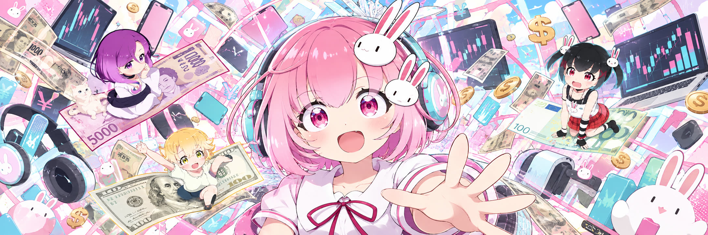

くるみちゃん
$KURUMI
night shift · bunny clips · bad indicators
Kurumi is twenty, nocturnal, and runs her entire research process out of a convenience store. She watches candles the way other people watch weather — closely, badly, and with no ability to change the outcome. The phone goes face down. The bread goes up.
Who she is
二十歳 · 夜型One room, one window, three secondhand monitors and a fourth she found. Kurumi keeps the hours nobody else wants — the gap between the New York close and the Tokyo open — because that is when the charts are quiet enough to hear. She is not an analyst. She is a girl with a very consistent schedule and a bread habit.
Her method is bunny-shaped and her conclusions are, by any serious standard, inadmissible. That has never stopped her writing them down.
「チャート、見ない。パン、食べる。」
House rules
- The phone goes face down before the chart goes red, not after.
- Bread first. Decisions second.
- If I am refreshing, I am not researching.
- Nothing decided after 4am counts as a strategy.
- Usagi-san does not get a vote. He does get a veto.
- Any plan I cannot explain to a cat in a diner is not a plan.
The bunny index
six indicators · zero predictive powerEvery serious desk has a model. This is hers: six things she can actually see from where she sits, each one measured honestly and interpreted terribly. The readings below are from last night.
The indicators are real in the sense that she really checks them. Nothing here predicts anything. A bunny facing a wall is a bunny facing a wall.
Ask the melon pan
it answers · it is breadWhen the index is inconclusive — which is always — Kurumi defers to the bread. It has been right about as often as everything else, and it has never once told her to add to a losing position at four in the morning.
A button that picks a sentence at random. That is the entire mechanism, and it is still better documented than most things in this market.
Tap the bread.
Clips
Hover a tile to preview it without sound. Click to open it full size.
Gallery
The notebook
one night, in the marginsShe keeps a paper notebook next to the keyboard, mostly so that there is one surface in the room that cannot be refreshed. This is a single shift, copied out.
Questions
asked, mostly by herIs any of this financial advice?
No. It is a cartoon with a bread habit. $KURUMI is a memecoin — buy it because you like the character, or do not buy it at all. Those are the two sensible options and there is not a third one hiding on this page.
Is the bunny index real?
The indicators are real: she genuinely counts the shelf, genuinely forgets the tea, and the plushie genuinely ends up facing the wall. The predictive power is entirely invented. Those two facts are not in tension — most indicators work the same way, they just use nicer fonts.
Why bunnies?
They came with the hair clips, then the hoodie, then the keyring, then the plushie on the desk and the one that sits on the stack of books judging her. At some point it stopped being a preference and became infrastructure.
Does she actually trade?
She watches, writes things down, and puts the phone in a drawer. Whether anything happens between those steps is the funniest open question on this website.
What is the melon pan thing?
Crunchy top, no leverage, costs about as much as a coffee and has never gone to zero. It is the only asset on this page she can describe accurately.
Where does she post?
On X as @kurumi_sol. Clips go up when the bread is warm and the shift is quiet, which is less often than she promises and more often than you would expect.